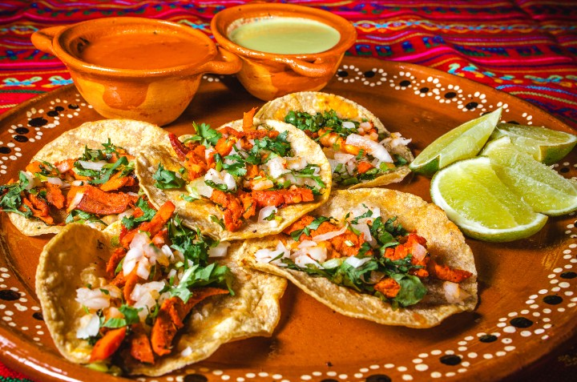

Al Pastor Tacos

Description
This is a recipe for juicy al pastor tacos that will please your family and make your mouth water.
follow along to learn how to bring the taste of Mexico into your home.
Ingredients
- 2 lbs pork shoulder or loin
- 6-7 deseeded guajillo and ancho chilles
- 1 cup pineapple juice
- 1/4 cup white vinegar
- 1/4 cup orange juice
- 2 tbsp achiote paste
- 3 cloves of garlic
- 1 tbsp each of cumin, oregano, salt, black pepper
- 1/4 tbsp cinnamon
- corn tortillas
- sliced pineapple
- chopped onion and cilantro
- lime wedges
Steps
- Pepare the marinade - Soak the guajillo and ancho chiles in hot water until softened (about 10 minutes).
In a blender, combine soaked chiles, pineapple juice, vinegar, orange juice, achiote paste, garlic, cumin, oregano, salt, pepper, and cinnamon. Blend until smooth
- Marinate the pork - Thinly slice the pork shoulder or loin and place it in a large bowl or resealable bag.
Pour the marinade over the pork, ensuring it’s well-coated. Marinate for at least 4 hours or overnight for best results.
- Cook the pork - Grill or pan-fry the marinated pork slices over medium-high heat until charred and cooked through. Once cooked, chop into small pieces.
- Prepare the toppings - Grill or pan-sear pineapple slices until slightly caramelized, then chop into small pieces.
Dice onion and chop cilantro.
- Assemble tacos - Warm corn tortillas and fill each with cooked pork.
Top with chopped pineapple, onion, and cilantro. Serve with lime wedges on the side.
- Enjoy your homeade tacos al pastor!